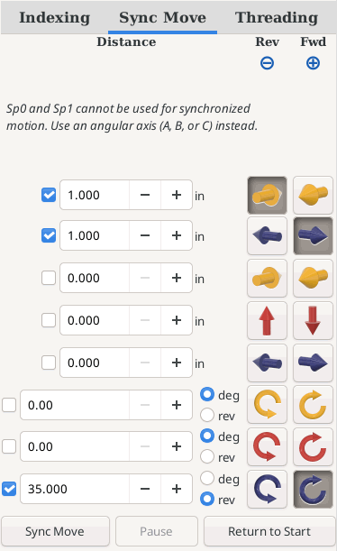

Axes Colors
| Color | Axis | Movement Control | |||||
| Neg | Pos | Neg | Pos | ||||
| Yellow | X | U | A | 
| 
| 
| |
| Red | V | B | 
| 
| 
| ||
| Blue | Z | W | C | 
| 
| 
| |
| Black | Spindles (Sp0 & Sp1) | ||||||
On this page, the axis letters are colored to assist the user. (Note: LinuxCNC does not allow for a Y axis when running as a lathe.)
Every axis has a row of controls on the user screens, but only the axes selected for use can be operated - the others are grayed out. For example, in the screen shown below, the user has selected to use the X, Z, U, V, W, and C axes, so the A and B rows are grayed out.
The table at the bottom of the user screen titled, Axis Assignments, shows the current axis assignments. It is updated the next time Rosetta is started after the selected axes are changed.
|
|
Synchronized Movement Tab

The Sync Move tab is used to drive synchronized movement of multiple axes.
Linear Axes
For linear axes (X, Z, U, V, and W), this is a distance. The UOM shown for these axes, and used by the system, is based on the Measurement System selection.
Angular Axes
For the angular axes (A, B, and C), this is a rotary indexing. Beside each distance, choose its unit:
- deg - degrees, with 2 decimal places, up to 99,999,999.00 degrees.
- rev - revolutions (full turns), with 3 decimal places, up to 999,999.999 revolutions. One revolution is 360 degrees, so 40 revolutions can be entered as 40 instead of 14,400 degrees.
You can type a distance with or without commas (1000000 and 1,000,000 are the same). Once you press Enter, the field shows the number with commas.
Notes:
- When you change between deg and rev, the number in the field stays the same and its meaning changes - 40 degrees becomes 40 revolutions (and vice versa). Check the number after changing the unit.
- Revolutions are acceptable to use when the fraction can be expressed in up to 3 decimal places. ½ = 0.5, ¼ = 0.25, and ⅛ = 0.125.
- When the fraction cannot be expressed in 3 decimal places (e.g., ⅓ or ⅙), degrees may be a better choice. 0.333 revolutions results in 119.88° of movement (not 120°), and 3 of these movements will not come back to the same start (3 x 119.88° = 359.64°).
Key Note:
With LinuxCNC, synchronized motion of the spindles cannot be achieved using Sp0 nor Sp1. Those motors must be attached to an angular axis (A, B, or C). It is a good idea to perform a "dry run" to ensure everything moves as expected. You may need to change the setup for the axes (e.g., the Scale) to achieve your desired movements.
Using the Sync Move Tab
To drive synchronized movement on selected axes, follow these steps:
| Step | Action | Value Saved? |
| 1 | The axis must be ENAbled. (This can be done automatically if Axis Not Enabled is set to Enable it automatically.)
The ENAble status for an axis is not saved when exiting Rosetta. It will always default to not enabled. | No |
| 2 | The feed rate for each axis must be a non-zero, positive number.
Note: all the selected axes start and finish together. The move takes as long as whichever axis needs the most time at its own feed rate, so no axis moves faster than the feed rate you set for it. | Yes |
| 3 | The axes must be selected. In the picture above, the blue tick boxes indicate that the X, Z, & C axes have been selected for use.
If an axis is ENAbled but not selected, then it will simply not run. | Yes |
| 4 | The distance to move the axis must be a non-zero, positive number. For A, B, and C, also choose deg or rev (see Angular Axes above). | Yes |
| 5 | A direction of movement for the axis must be selected. In the picture above,
| Yes |
| 6 | To initiate the movement, click on the Sync Move button below the axis distance fields.
To stop the movement part way, click on the Pause button (see Pausing a Sync Move below). To return the system to where it was at the start of this operation, click on the Return to Start button. | n/a |
In the table above, where Value Saved? is Yes, that value is saved when exiting Rosetta, and will be the same when Rosetta is restarted. The deg / rev choice for each angular axis is saved too.
Pausing a Sync Move
The Pause button, between Sync Move and Return to Start, stops a Sync Move part way - for example, when the belt driving the cutter breaks, or when you see the cutter is going to hit the chuck. The axes slow down and stop where they are. The button then reads Continue, and you can either:
- click Continue to finish the move. The axes carry on along the same path, at the same speed, as if the move had not been paused, or
- click Return to Start to send the axes back to where the Sync Move started.
The progress bar shows (paused) while the move is paused. Pausing does not stop the spindles, or a cutter driven by its own motor.
You can turn the machine off, or press E-Stop, while the move is paused (for example, to replace a broken belt). When the machine is back on, Continue still finishes the move from where the axes stopped.
Do not move an axis of a paused Sync Move (by jogging, indexing, or running a program) unless you mean to leave its path. Continue goes straight from wherever the axes are to the Sync Move's end point. If an axis was moved off the path, Rosetta says which one and asks before continuing; choose Return to Start instead if you are not sure the way is clear.
Notes:
- Stopping a Sync Move with LinuxCNC's own Stop button (or the Esc key) also lets you use Continue or Return to Start afterwards.
- You can also pause a Sync Move with an external Pause button plugged into a limit jack - see Pause Button. The external button only pauses; use Continue on the screen to carry on.
- When a G-code program is paused (by LinuxCNC's Pause button, an M0 or M1 in the program, or the external Pause button), this button reads Continue too, and clicking it carries on with the program - the same as LinuxCNC's Resume button.